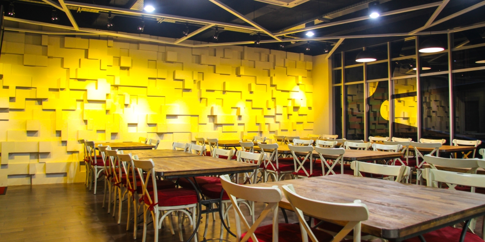

Restourant Malang Nakam :)
 Alamat :
Jl. Raya Besar Sawojajar Kec. Kedungkandang Kota Malang Jawa Timur 59361
Klik dibawah untuk melihat google maps
Hubungi/Kontak Pemesanan :
021 8223 2666 - 0341 67887
Jam Operasional :
Pukul 10.00 - 22.00 WIB
Libur / Tutup :
Selalu Buka
Profil dan Deskripsi Restourant
Restourant Malang Nakam Sam ini adalah kuliner yang menyajikan aneka
menu varian makanan yang ada di Indonesia.
Restourant Malang Nakam Sam yang berada di Jl. Raya Besar Sawojajar Kec. Kedungkandang Kota Malang Jawa Timur
adalah cabang kedua dari Restourant Nakam Malang.
Terdapat beberapa pilihan menu makanan dan minuman yang tersedia.
Restourant Malang Nakam Sam ini memiliki daya tampung yang cukup besar dan luas untuk diadakan acara makan bersama. Berikut ini menu yang disajikan dalam Restourant dan silahkan dipilih..